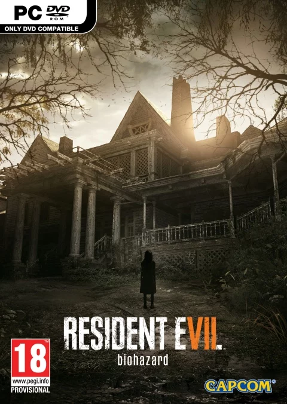

Il s'agit du 7e opus de la série Resident Evil, ainsi que du premier épisode de la série principale à être en vue à la première personne. Il ne s'agit pas d'un jeu d'action comme Resident Evil 4, 5 et 6, mais d'un survival horror, comme le premier Resident Evil. Lors de sa sortie le jeu à fait beaucoup de bruit et à été très bien noté par plusieurs magazine spécialisé. Resident Evil 7 : Biohazard se joue pour la première fois dans la série à la première personne et peut être joué en réalité virtuelle. En effet cette dernière se trouve particulièrement immersive et permet au joueur d’avoir des sensations décuplées. Le plus classique des «jump scare» fera alors effet. C’est pour cela qu’il est recommandé aux joueur de commencer à joueur sans la réalité virtuelle puis, pour les plus courageux, d’essayer cette dernière. La VR rajoute une dizaine d’heure de jeux. Resident Evil 7 ne révolutionne pas le style «horror», il s’accentue d’avantage sur des situations «dérangeante» , morbide et «gore» immergeant alors le joueur dans un monde inhumain, lui laissant comme seule échappatoire la fuite. Resident Evil 7 Biohazard, toute proportion gardée, marque un réel tournant pour les joueurs VR : pour la première fois, vous pourrez profiter d’un véritable jeu intégralement VR. Une nouvelle référence et un must have pour les possesseurs de PS VR.